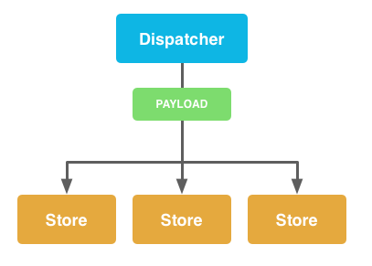

jrhicks.github.io
jrhicks.github.io
Creating a Flux Example For the React-Webpack-Rails-Tutorial
Pull Request Challenge
Pull Request Challenge
React.js Conf 2015 just ended and I'm excited as ever to start using Rect.js, but I have some questions regarding Rails:
How do I meld this rich javascript ecosystem nicely with Rails?
What are the specifics of Flux and how do I use it with Rails?
After reading Juston Gordon's article Fast Rich Client Rails Development With Webpack and the ES6 Transpiler I was convinced he was on the right path with the first question, but in his React Webpack Rails Project he left it as an exercise to Add demonstration with flux.
In this article I will document
Getting Juston's Basic Setup Working
Learning Flux
And Building the
My first objective was to get my setup working just like Juston's. Below are his instructions for basic setup with a few additional notes where things got bumpy for me.
 From Facebook's Overview of Flux
From Facebook's Overview of Flux
I think a key understanding of actions is that they are NOT functions or routines. Actions are data.
"When new data enters the system, whether through a person interacting with the application or through a web api call, that data is packaged into an action — an object literal containing the new fields of data and a specific action type." Actions and the Dispatcher, Facebook, Inc
ActionTypes are literal primitives that are stored as constants. It appears to be a react convention to use keyMirror which given input: {key1: val1, key2: val2} will produce output {key1: key1, key2: key2}.
/* script/constants/AppConstants.js */
var keyMirror = require('react/lib/keyMirror');
module.exports = {
ActionTypes: keyMirror({
LOAD_STORIES: null,
RECEIVE_STORIES: null,
LOAD_STORY: null,
RECEIVE_STORY: null,
CREATE_STORY: null,
RECEIVE_CREATED_STORY: null
})
}
An action is an object literal with an action type and parameters.
{
type: ActionTypes.CREATE_STORY,
title: title,
body: body
}
Action creators build action data and pass them to the dispatcher.
/* scripts/actions/StoryActionsCreator.js */
var AppDispatcher = require('../dispatcher/AppDispatcher.js');
var AppConstants = require('../constants/AppConstants.js');
var ActionTypes = AppConstants.ActionTypes;
module.exports = {
createStory: function(title, body) {
AppDispatcher.handleViewAction({
type: ActionTypes.CREATE_STORY,
title: title,
body: body
});
}
}
A key point of the dispatcher is that it there is only ever one dispatcher. It is basically the manager and traffic cop since it can protect against circular dependencies and endless loops.
While you are free to write your own, you can get a robust dispatcher as available through the flux npm module.
In your application, you extend flux's dispatcher with handler methods that wrap actions into a payload. These handler methods are called by your Action Creators.
/* scripts/dispatcher/AppDispatcher.js */
var Dispatcher = require('flux').Dispatcher;
var assign = require('object-assign');
var AppDispatcher = assign({}, Dispatcher.prototype, {
handleServerAction: function(action) {
var payload = {
source: PayloadSources.SERVER_ACTION,
action: action
};
this.dispatch(payload);
},
handleViewAction: function(action) {
var payload = {
source: PayloadSources.VIEW_ACTION,
action: action
};
this.dispatch(payload);
}
});
module.exports = AppDispatcher;
"Our method (hanndleViewAction) calls the dispatch method, which will broadcast the action payload to all of its registered callbacks. This action can then be acted upon within Stores, and will result in a state update." Getting To Know Flux, Ken Wheeler October 28, 2014.

Stores are application state and logic. Unlike the dispatcher there isn't any library to lean on within flux to do our work for us. Fortunately, this means there is very little outside of our code we need to understand; but we do need to stay true to store philosophies while programming a store module. We will also need to understand how to map our problem domain to stores. While similar to the M in MVC they aren't exactly models or collections, necessarily.
To code a Flux store into a javascript module we will need to code the following:
Protect State - Define setter methods and declare variables in the module but do not export them.
Register with the Dispatcher - Register a callback with the dispatcher to inspect payloads and call private setter methods with action data.
Define and Export an Event Emitting Store - Define the Store that extends an Event Emitter and has read accessors to protected state.
This is the general layout, in the following sections we will discuss each section in detail.
/* script/stores/ShoeStore.js */
var AppDispatcher = require('../dispatcher/AppDispatcher');
var ShoeConstants = require('../constants/ShoeConstants');
var EventEmitter = require('events').EventEmitter;
var merge = require('react/lib/merge');
// Protect State
...
// Register with the Dispatcher
...
// Define and Export an Event Emitting Store
...
Stores insure only they can update state by declaring their state in variables inside the module but outside of exported Store.
Notice these conventions of State Protection
// Protect State
var _shoes = {};
function loadShoes(data) {
_shoes = data.shoes;
}
Outside of the Store, but within the module; you register with the dispatcher to handle the payload. The callback should:
// Register with the Dispatcher
AppDispatcher.register(function(payload) {
var action = payload.action;
var text;
// Define what to do for certain actions
switch(action.actionType) {
case ShoeConstants.LOAD_SHOES:
// Call internal method based upon dispatched action
loadShoes(action.data);
break;
default:
return true;
}
Since we extend from EventEmitter we easily manage listeners and execute their callbacks. Here we declare the API we provide to our Views so they can register themselves as listeners and access state.
// Define and Export an Event Emitting Store
var ShoeStore = merge(EventEmitter.prototype, {
// Returns all shoes
getShoes: function() {
return _shoes;
},
emitChange: function() {
this.emit('change');
},
addChangeListener: function(callback) {
this.on('change', callback);
},
removeChangeListener: function(callback) {
this.removeListener('change', callback);
}
});
module.exports = ShoeStore;
Most generally speaking, stores are application state and logic. However, in hooking up our Rails application to Flux, there are some basic questions to ask about designing stores for relational data.
One approach is to have a store for each type of relational data. This approach suggests that stores can benefit from being normalized. Granted that this store design seems to complex components, others argue that Keeping Related Data in Separate Stores doesn't contaminate the purity of our components.
Given the following data from a Messages model and a Users model we could create two stores: MessageStore and UserStore
/* MessageStore._messages */
{
'10': {id: 10, message: 'hello', to: 1, from: 2}
}
/* UserStore._users */,
{
'1': {id: 1, name: 'user1'},
'2': {id: 2, name: 'user2'}
}
Flux views are react classes that get their state from stores and listen to change events emitted by these stores. In this example, the message store uses a two normalized stores to construct a message view component.
var Message = React.createClass({
propTypes: {
// This component grabs its data based on the messageId prop passed in
messageId: React.PropTypes.number
},
getStateFromStores: function() {
// A helper function to grab all the most updated information from both the
// MessageStore and the UserStore
var message, fromUser, toUser;
message = MessageStore.getById(this.props.messageId);
if (message) {
// Can only populate the to and from users if the message was retrieved
fromUser = UserStore.getById(message.fromUserId);
toUser = UserStore.getById(message.toUserId);
}
return {
message: message,
fromUser: fromUser,
toUser: toUser
};
},
getInitialState: function() {
return this.getStateFromStores();
},
componentDidMount: function() {
// Make sure that we add change listeners to all the stores we care about,
// in this case MessageStore and UserStore, and update state when they change
MessageStore.addChangeListener(function() {
this.setState( this.getStateFromStores() );
}.bind(this));
UserStore.addChangeListener(function() {
this.setState( this.getStateFromStores() );
}.bind(this));
},
render: function() {
return (
<div>
<p>
From: {this.state.fromUser.name}<br />
To: {this.state.toUser.name}
</p>
<p>
{this.state.message.body}
</p>
</div>
);
}
});